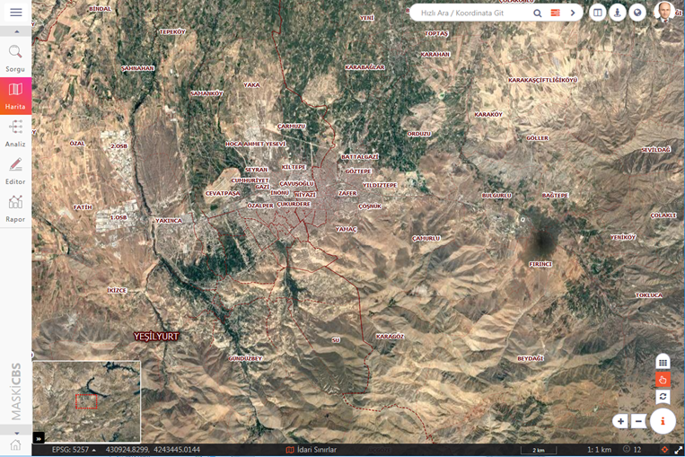

ODAGIS+ Web arayüzünün genel görünümü aşağıda verilmiştir. Arayüzde ortada harita kanvası olmak üzere solda temel işlemlerle ilgili bir panel, sağ alt köşede bilgi alma ve diğer araçlar, sağ üst köşede ise hızlı arama, cadde, sokak ve küresel/3D görünüm araçları yer almaktadır.

ODAGIS+ Web arayüzünün detaylı görünümü ise aşağıda verilmektedir. Bu görünümde her bir ekran objesinin açıklaması ve ilgili menüler topluca bir arada gösterilmektedir.